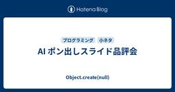
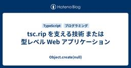

Object.create(null)
https://susisu.hatenablog.com/
Object.create(null)
フィード

AI ポン出しスライド品評会 72
72
Object.create(null)
最近[いつ?]は AI に登壇用のスライドをポン出しさせたという話や, それに対する賛否両論を各所で聞くようになってきました. そこで私も試しに AI にスライドをポン出しさせてみて, 実際に登壇に耐える品質なのかレビューしてみました. 条件設定は以下の通りです: Claude Code を使用 題材は tsc.rip の実装リポジトリ 詳しくは前回の記事 tsc.rip を支える技術 または 型レベル Web アプリケーション - Object.create(null) を参照 リポジトリにはソースコード一式と, 構成などを書いた CLAUDE.md が含まれています 指示は tsc.rip…
7日前

tsc.rip を支える技術 または 型レベル Web アプリケーション 7
Object.create(null)
先週 8/22 に Kyoto.なんか #8 を開催しました. 名前の通り何でもありのイベントですが, 今年も多彩な登壇・参加者が集まって面白い会になったと思います. いつもありがとうございます. 私は「tsc.rip を支える技術」というタイトルで登壇しました. 以下は発表の記事版です. 当日のスライドは末尾にあります. TypeScript 7.0 先月 7/8 に TypeScript 7.0 がリリースされました. コンパイラ (tsc) の実装言語が TypeScript 自体から Go になり, パフォーマンスが向上しています. めでたいですね. devblogs.microsof…
7日前

最新コードレビュー事情
Object.create(null)
AI もすなるコードレビューといふものを、人間もしてみむとてするなり。 — AI 紀貫之 AI がコードを書くようにはなっても基本的には人間がレビューする生活を続けているので, いま何を考えてどうしているかをスナップショットとして書いておきます. 仕事 メンタルモデルとして AI コーディングエージェントを単なる道具としてみなしていた時代は, 人間(A): タスクに着手, コーディングを AI に指示, 検収 AI: 人間(A)の代わりにコードを書く 人間(B): 人間(A)が書いたコードとしてレビューする というような構造だったんですが, これは人間(A)の検収と人間(B)のレビューが実質的…
3ヶ月前
TSKaigi 2026 でデコレータの現状について話しました
Object.create(null)
俺は人間静的検査器・susisu。 幼馴染で同級生の undefined とインターネットに遊びに行って、Stage 3 Decorators の怪しげな進捗状況を目撃した。 資料を作るのに夢中になっていた俺は、背後で進んでいた Stage 2.7 への降格に気づかなかった。 はい. 登壇 去年に引き続き TSKaigi 2026 で登壇してきました. いつもありがとうございます. 2026.tskaigi.org タイトルは Stage 3 Decorators となっていますが, 冒頭の通り実は登壇の直前に Stage 2.7 に降格されていました. 聞かれていた方はわかると思うんですが,…
3ヶ月前
イラつくバルーンを滅ぼそう
Object.create(null)
みなさんにもマウスホバーで表示されるバルーン内のリンクが開けなくてイラついた経験があるかと思います. リンクにカーソルを移動しようとすると閉じてしまうバルーン 丁寧に吹き出しの三角形の部分を通ったときだけリンクに辿り着ける. イライラ棒か? こんな体験は今すぐ滅ぼしましょう. Web なら floating-ui を使うと, そもそものバルーン自体の実装も簡単にできますし, この問題への対策も 1 行で済みます. 対策 1. バルーンが閉じるのを遅延させる リンクにカーソルを合わせようとするとマウスホバーが外れ, その瞬間にバルーンが閉じてしまうのが問題の原因です. ということで, 素朴にはバ…
5ヶ月前
Stage 3 Decorators のことを思い出す時に読む記事
Object.create(null)
デコレータの Proposal が Stage 3 になってから約 4 年, TypeScript がサポートしてから約 3 年経っているにも関わらず, 未だに普段使いしなさすぎて全く使い方を覚えられていません. ということで TypeScript での使い方を中心に覚える / 忘れたら読んで思い出すために記事を書いておきます. なお具体的なユースケースについてはほぼ触れませんので悪しからず. それについてはまたの機会に... 仕様の本体 = ECMAScript への Proposal は以下. tc39/proposal-decorators: Decorators for ES6 cla…
6ヶ月前
Vite でお手製 Hot Module Replacement
Object.create(null)
先日の新春 LT 大会で, PixiJS と Vite を使って VJ するという話をしました. こういうやつです 実装や資料は以下のリポジトリにまとまっています. が操作説明などは一切用意していないのでご了承ください (大体キーボード操作で, keydown イベントのハンドラを見るとなんらかわかると思います). 以下は発表中で触れた Hot Module Replacement の実装についての, もう少し詳しい解説です. Hot Reload と Hot Module Replacement ご存知の通り Vite には元々 Hot Reload (あるいは Live Reload) の…
6ヶ月前
never が好き
Object.create(null)
この記事は はてなエンジニア Advent Calendar 2025 の 4 日目の記事です. id:susisu です. TypeScript の never 型がたいへん奥ゆかしいので見ていってください. 基礎編 まずは never 型がどういったものなのかを見てみましょう. 値のない型として 例えば number 型に対しては 42, 3.14, NaN など , string 型に対しては "", "Hello" などのように, 一般的な型にはその型が付けられる値が存在します. 一方で never 型にはそういった値が存在しません (こういった型は一般にボトム型などと呼ばれたりします…
9ヶ月前
Next.js でよくある一覧 + 詳細画面を作る
Object.create(null)
あの日見たパターンの名前を僕たちはまだ知らない. よくある一覧 + 詳細画面を作りたい 例えば TODO アプリで, /todo にアクセスしたらタスクの一覧を, /todo/42 にアクセスしたら一覧は表示したまま ID = 42 のタスクの詳細を表示する, というよくあるパターンの画面を作りたい. 世の中の実例としては Asana や, URL の形は異なりますが GitHub の Projects なんかがこういう感じですね. /todo で一覧, /todo/42 で一覧 + 詳細 技術的には要するに SPA なのでやればできるはずなんですが, これを Next.js (App Rou…
10ヶ月前
querySelector に型引数を指定しない
Object.create(null)
必要もないのに querySelector や querySelectorAll の型引数を指定しないようにしましょう. (この記事は AI レビュワーに「型引数を指定した方が型安全だ」と提案されたのに対する反論として作成しています.) querySelector の型安全性 querySelector や querySelectorAll の型定義は, 後述する要素型セレクターに関連する部分を除くと, 基本的には以下のようになっています. querySelector<E extends Element = Element>(selectors: string): E | null; quer…
1年前
OpenTelemetry でメトリクスを計測しようとしたときに知りたかったこと
Object.create(null)
タイトルは What I Wish I Knew When Learning Haskell リスペクトです. SDK と API OpenTelemetry でアプリケーションの計装をする際に使うパッケージ (モジュール) は, 計測・集約・エクスポートなどの実装の本体である SDK と, 計測のためのインターフェースである API に分離されています. たとえば Node.js の場合, アプリケーションのエントリポイント付近で @opentelemetry/sdk-metrics パッケージを使って SDK を初期化し, グローバルな MeterProvider を設定します. impo…
1年前
fetch() では Host ヘッダーを設定できないし話はそこまで単純じゃない
Object.create(null)
JavaScript (TypeScript) のコードから HTTP リクエストを送る手段として, 最近では Web 標準の一つである Fetch Standard で定義された fetch() が使われることが多いですね. await fetch("https://example.com"); リクエストヘッダーには Host を設定できない Fetch Standard では Host をはじめとして Content-Length, Cookie, Origin など, いくつかのリクエストヘッダーを設定 (JavaScript から上書き) することが禁止されています. https:/…
1年前
Math メソッド 最強
Object.create(null)
異論は認めます S clz32 A acosh, asinh, atanh, f16round, fround, imul B acos, asin, atan, cbrt, cosh, expm1, hypot, log1p, sign, sinh, tanh, trunc, sumPrecise*1 C atan2, cos, exp, log, log2, log10, sin, tan D abs, ceil, floor, max, min, pow, random, round, sqrt *1:Stage 3 https://github.com/tc39/proposal-ma…
1年前
コードの読み書き
Object.create(null)
コードレビューというかコードリーディングというかコードライティングというか、とにかく自分と他人の見えている景色がかなり違っていそうということはわかっているんだが、それを伝えられるなら苦労していないという状態— 塩水うに (@susisu2413) June 29, 2025 とにかく他人がコードを読み書きしている様子を見ていると腑に落ちないというか, 何と言うか自分の考える「読み書き」とは全然違うことをしているんじゃないか? あるいは自分の「読み書き」が異常なのか? みたいな気持ちになることが多い. 例えばセルフコードレビューをしてみようみたいな記事を書いて, これを読んでコードを自分でレビュ…
1年前
プロジェクト固有の ESLint ルール追加 RTA
Object.create(null)
TypeScript 使用ルートです. AI Coding Agent Enablement in TypeScript や TS特化Clineプログラミング で紹介されていたように独自の lint ルールを作りたいということがあるかと思いますが, それシュッとプロジェクト内に完結した形で作りたいといったときにご活用ください. サンプルリポジトリは以下: 1. 依存ライブラリをインストール TypeScript でルールを書くために, 以下の 2 つを devDependencies としてインストールしてください. jiti: ESLint で TypeScript で書かれた設定ファイルを…
1年前
TSKaigi 2025 参加レポート
Object.create(null)
登壇してきた 発表の内容については前の記事を読んでください. この規模のカンファレンスでの登壇は初めてだったのですが, 元々関連分野に興味があった人には刺さりつつ, そうでない人にも面白いと思ってもらえた様子も観測していて, だいたい目論見通りの発表ができたんじゃないかと思います. 良かったね. 来月の関数型まつりにも参加するので (登壇はしませんが), TypeScript でのエフェクト周りのあれこれについてなどはまたバトルしてください > 各位 あとこの場を借りて運営の方々に感謝を申し上げておきます. 前回の TSKaigi Kansai では運営をしていたのですが, 今回登壇者として参…
1年前
「君だけのオリジナル async / await を作ろう」スピーカーノート & 補足
Object.create(null)
TSKaigi 2025 での登壇「君だけのオリジナル async / await を作ろう」のスピーカーノートと補足です. (TSKaigi 2025 自体の感想や面白かった発表の話なんかはまた別途書きます.) スピーカーノート & 補足 参考文献 スピーカーノート & 補足 「君だけのオリジナル async / await を作ろう」というタイトルで発表します. susisu ですよろしくおねがいします. 今日, 特に最後の方は多少抽象度が高い話題を扱うので, もしかしたらちょっと難しい話になってしまうかもなんですが, 最終的に私が一番伝えたいのは「TypeScript 面白い」ということ…
1年前
Effective TypeScript 読んだ / 郷に入っては郷に従う
Object.create(null)
Effective TypeScript (第2版) を読んだ なんらか他の人に読んでおくと良いよと紹介できる本があると良いなと思って読みました. 2020 年以降に TypeScript を書く上での常識が概ね網羅されていると思うので, そういった前提知識に自信をつけたいならおすすめです. www.oreilly.co.jp ただ「項目18 推論可能な型でコードを乱雑にしない」で, 関数の戻り値の型アノテーションをデフォルトで省略するよう推奨していることについては明確に反対したい. より正確には, コールバックなど再利用を想定しない関数についてはデフォルトで省略してもよいが, 通常関数は再利…
1年前
ESLint の Flat Config を書く時に読んでほしい記事 (2025-03版)
Object.create(null)
この記事は以下の記事の改訂版です. susisu.hatenablog.com ESLint v9 から Flat Config がデフォルトの設定ファイルの形式となり, 徐々に対応しているプラグインも増えて移行が進みつつありますが, 実際に移行したプロジェクトを見ているとしばしば勘違いなどから誤った設定をしている事例を目にします. ということで, Flat Config を書くにあたっていくつか知っておいて欲しいことや, よく見かけるミスをまとめてみました. この記事では網羅的な説明はしませんので, ESLint や typescript-eslint の公式ドキュメントを前提として, 副読…
1年前
then() を export した結果ｗｗｗ
Object.create(null)
Promise と Thenable Promise が ECMAScript の言語仕様に追加されたのは ES2015 ですが, Promise ライクなオブジェクトはそれ以前からも広く使われてきました (jQuery の Deferred など). そういった Promise ライクなオブジェクトとの互換性のため, Promise の仕様は本物の Promise と Promise ライクなオブジェクトを混ぜて使えるようになっています. 具体的には, Promise ライクなオブジェクトは一般に Thenable という共通のインターフェースを持つことになっています. オブジェクトが Th…
2年前
Reusable Workflows と Composite Actions の使い分け
Object.create(null)
個人の見解です. GitHub Actions 内の実行単位 GitHub Actions で基本となる実行単位は workflow ですが, その中に job, さらにその中に step という階層構造があるということをまずは理解しておきましょう. workflow トップレベルの実行単位 job workflow の中で並列に実行される (直列に実行したい場合は needs で依存関係を持たせる) runner (VM) は job ごとに用意される step job の中で直列に実行される Reusable workflows と composite actions GitHub から公…
2年前
ラベル付きタプル型で遊ぼう
Object.create(null)
ラベル付きタプル型とは TypeScript には配列型 (Array) のサブセットとしてタプル型がありますが, その各要素にはラベルをつけることができます (参考). // 通常のタプル型 type Tuple = [number, string]; // ラベル付きのタプル型 type LabeledTuple = [foo: number, bar: string]; ちなみにタプル型には可変長の部分を 1 つまで含めることができますが, そこにもラベルがつけられます. type LabeledVariadicTuple = [foo: number, ...bar: string[]…
2年前
N 文字以上なら省略表示
Object.create(null)
「N 文字以上 / 以内」みたいなことを言われたときに考えること. 「文字」とは? 単に「文字」と言っても, それが指しているものが何かは自明ではない. 符号単位 (code unit) JavaScript の場合, 文字列は UTF-16 としてエンコードされている*1ので, そのエンコードの単位である 16 bit ごとに分割するというのがこの方法. .length で取得できるのはこの符号単位の数で, .slice() に与えるのも符号単位で数えたインデックスとなっている. > "あいうえおABCDE".length 10 > "あいうえおABCDE".slice(0, 5) "あいう…
2年前
N 行以上なら省略表示
Object.create(null)
N 行以上なら省略表示したい 所感: LGTM import { FC, ReactNode, CSSProperties } from "react"; import styles from "./LineClampingBox.module.scss"; /** 指定した行数以上なら省略表示する */ export const LineClampingBox: FC<{ /** 最大行数 */ maxLines: number; children: ReactNode; }> = ({ maxLines, children }) => { return ( <div className={…
2年前
Data types à la carte in TypeScript
Object.create(null)
この記事は はてなエンジニア Advent Calendar 2024 の 4 日目の記事です. 昨日は id:onk さんの コミュニティ生活で大切な三つの袋 - id:onk のはてなブログ でした. ところで皆さん TypeScript は書いていますか書いていますよねそうですよね. そんな皆さんに TypeScript の表現力の高さを改めて実感してもらうべく, この記事では Data types à la carte という論文で紹介されている抽象データ型の拡張性に関する問題を, TypeScript ではどのように解決できるかを紹介します. 抽象データ型の拡張性の問題 まずは論文で…
2年前
package.json の Conditional Exports では順序が意味を持つ
Object.create(null)
Conditional Exports とは package.json 内の exports フィールドには, 以下のように条件付きでエクスポートするファイルを指定できる (conditional exports). { "name": "@susisu/example", "type": "module", "exports": { ".": { "require": "./lib/index.cjs", "default": "./lib/index.js" } } } たとえばこの例では CommonJS ファイル内から require("@susisu/example") のように参照…
2年前
null or undefined #kyotoasterisk とその補足など
Object.create(null)
Kyoto.なんか #6 で発表しました. speakerdeck.com 以下はその補足情報など. 仕様書中の出現頻度 null と undefined がそれぞれの仕様でどの程度使われているのかは, 仕様書中の出現頻度を見るだけでもある程度わかりりそうです. ということで ECMAScript 2024 と WHATWG の標準 (2024-09-07 時点) のうちいくつかの仕様書の中での出現頻度を見てみましょう. Spec #null #undefined ES2024 300 939 DOM 368 120 Fetch 276 10 HTML 1778 275 URL 98 9 見て…
2年前
ESLint の Flat Config を書く時に読んでほしい記事 (2024-08版)
Object.create(null)
2025-03-30 追記: 改訂版を書きました. susisu.hatenablog.com ESLint v9 から Flat Config がデフォルトの設定ファイルの形式となり, 徐々に対応しているプラグインも増えて移行が進みつつありますが, 実際に移行したプロジェクトを見ているとしばしば勘違いなどから誤った設定をしている事例を目にします. ということで, Flat Config を書くにあたっていくつか知っておいて欲しいことや, よく見かけるミスをまとめてみました. この記事では網羅的な説明はしませんので, ESLint や typescript-eslint の公式ドキュメントを前…
2年前
Object.groupBy で作られるオブジェクトの prototype は null
Object.create(null)
おさらい: prototype JavaScript のオブジェクトはみんな prototype というのを持っていて, この prototype からプロパティを継承, より正確には, プロパティアクセス時にそのプロパティがオブジェクトに存在しなければ prototype を辿って見つけにいくことになっている. あるオブジェクトを prototype とした別のオブジェクトを作るには Object.create を使う (あるいは new 演算子や __proto__ を使っても良い). const x = {}; x.foo = "foo"; const y = Object.create…
2年前
ドメインモデリングにエフェクトを使う思考実験
Object.create(null)
TypeScript でエフェクトを使う話の続き. あるいは DI 手法の話でエフェクトを使うのを半ば冗談として書いていたのを, より具体的な状況を想定してもう少し真面目に考えてみる. ドメイン層と永続化 ドメイン層においては永続化のための具体的な技術については関心を持ちませんが, 永続化すること自体に関心を持たないわけではありません. リポジトリというドメイン層に用意されたインターフェースを使って保存や検索を行いつつ, 具体的な技術はドメイン層の外にあるインターフェースの実装に任せるというのが典型例です. これは永続化以外にも, 例えばイベントの送信などについても同様のことが言えます. (な…
2年前